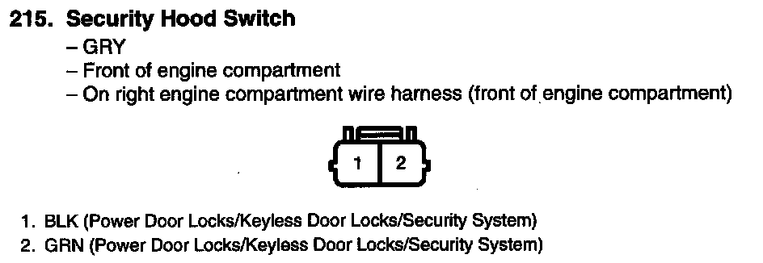

Operation CHARM
: Car repair manuals for everyone.
Home
>>
Acura
>>
2007
>>
MDX V6-3.7L
>>
Repair and Diagnosis
>>
Sensors and Switches
>>
Sensors and Switches - Accessories and Optional Equipment
>>
Hood Sensor/Switch (For Alarm)
>>
Diagrams
Hood Sensor/Switch (For Alarm): Diagrams
